Final research report 15%
A 2,000 to 2,500 word paper with introduction, literature review of at least three research articles, hypotheses, methods, results, and the survey as an appendix. Every paper had to test its main hypothesis with regression.
Carnegie Mellon University in Qatar · 2012 to 2016 · Undergraduate
Ask a question about people, design a survey, collect the data, and test it with regression.
About 23 students
This course taught students to evaluate and run original research on human behavior. Each student picked a question about life in Qatar, wrote a proposal, completed human subjects training, went through IRB review, wrote and piloted a survey, and collected their own data. We covered measurement, scales, sampling, survey design, and experiments along the way, then spent the last weeks on analysis so that every final paper tested its main hypothesis with regression. The semester ended with three days of student research presentations.
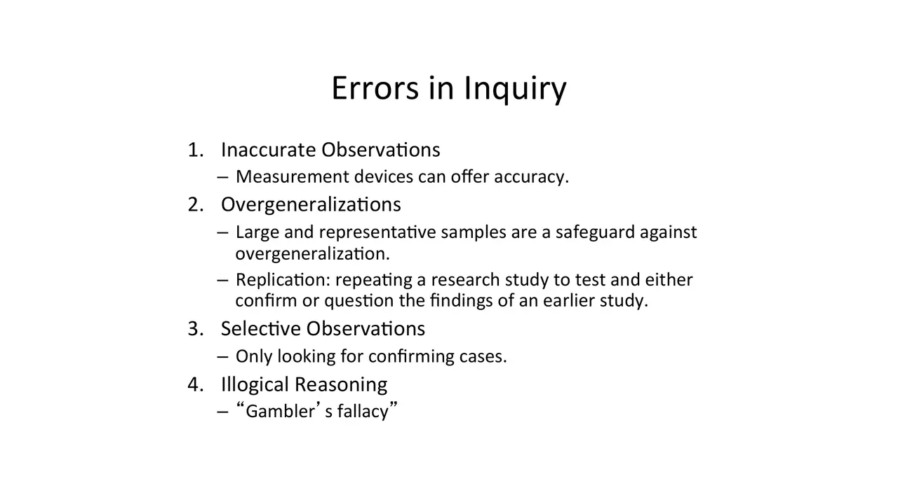
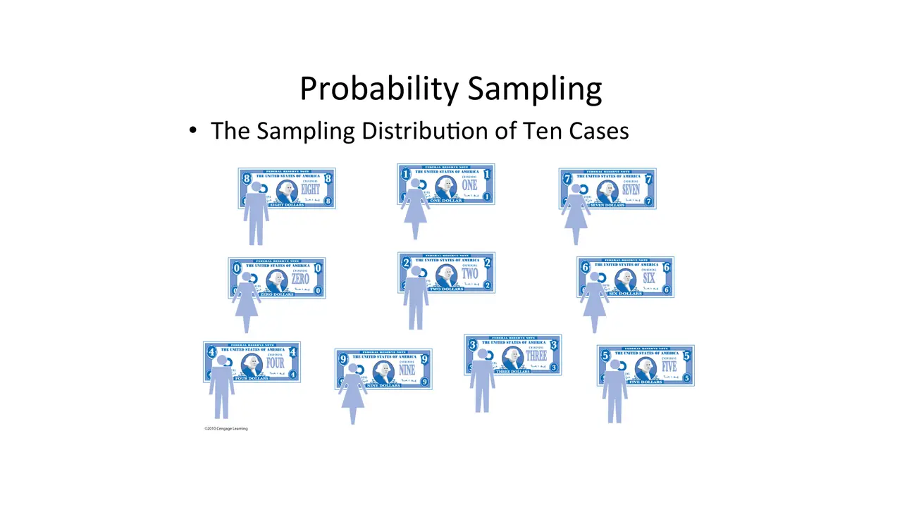
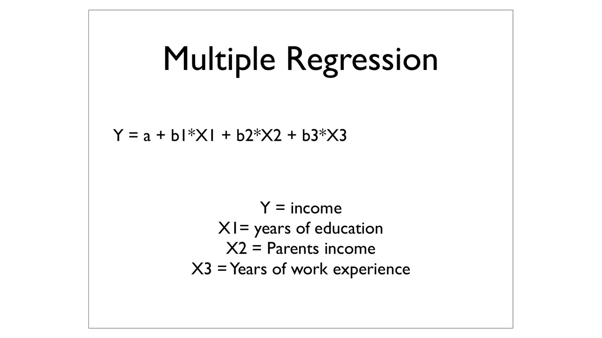
slides from the decks
I taught from
Spring 2013 · Mondays and Wednesdays
Scroll the schedule and the slides follow along: five from each session, picked from the decks I taught from.

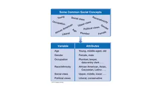
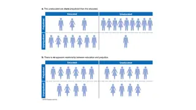
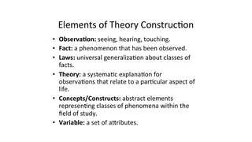
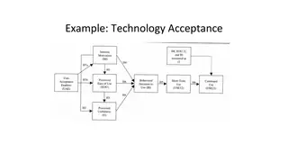
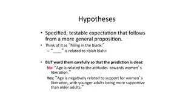

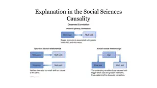
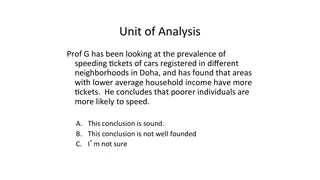
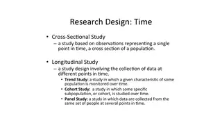
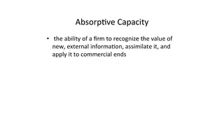
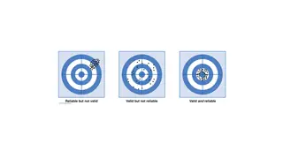

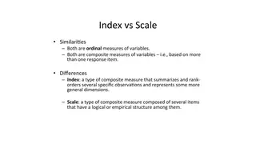
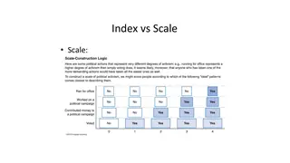
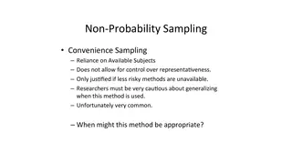
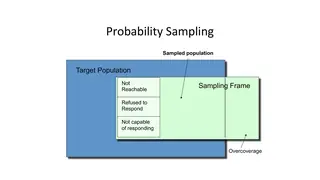
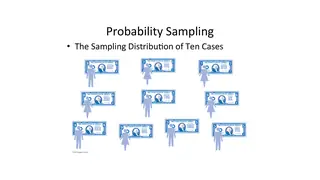

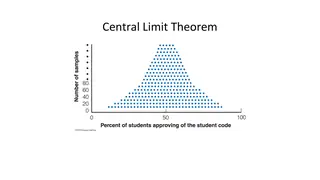
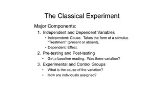
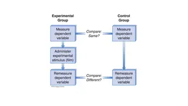
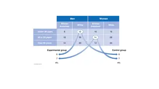
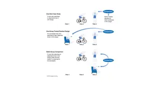

What students hand in
A 2,000 to 2,500 word paper with introduction, literature review of at least three research articles, hypotheses, methods, results, and the survey as an appendix. Every paper had to test its main hypothesis with regression.
A short talk on the study and its results, over three days at the end of the semester.
CITI human subjects training, two proposal drafts, IRB forms, and a survey draft that classmates took and critiqued in class before the final version went out.
20% each, on research design and measurement, then sampling, surveys, and experiments.
Eight quizzes on the Babbie readings, lowest score dropped.
Attendance by clicker, and in-class design exercises.
What students built
Every project, by term.
Offerings